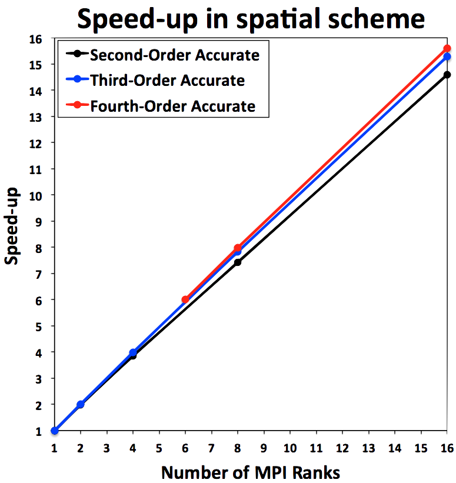
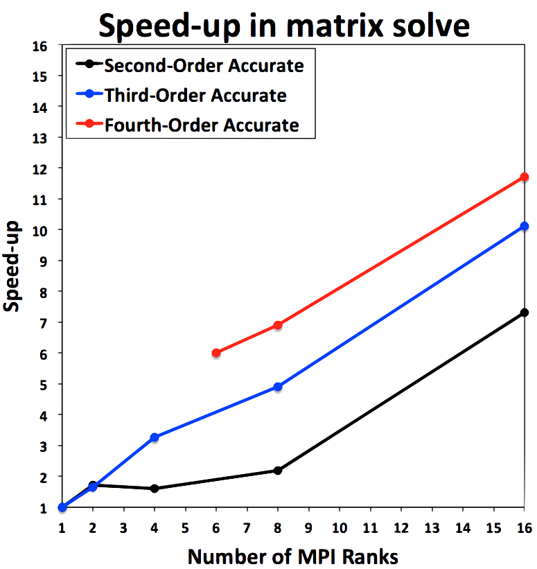
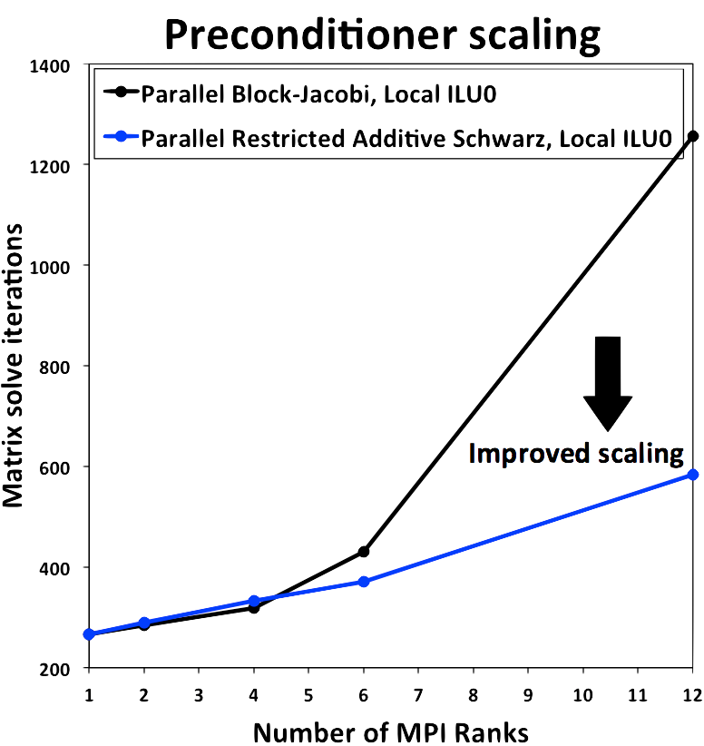

Parallelization¶
ChiDG MPI¶
ChiDG uses a module named mod_chidg_mpi to hold information regarding the parallel
environment available to ChiDG. This includes values for the number of MPI ranks given to
ChiDG, the rank of the current process, and a communicator(ChiDG_COMM) containing
the processes that ChiDG is running on. These are:
module mod_chidg_mpi
integer(ik) :: IRANK
integer(ik) :: NRANK
type(mpi_comm) :: ChiDG_COMM
...
end module
One instance where having a defined communicator for ChiDG is helpful is in unit-testing. We may want to test a routine using 1, 2, and 3 MPI ranks. So, we may write a test and run it with 3 MPI ranks so MPI_COMM_WORLD includes all of those. However, we only want ChiDG to run on subsets of those to test different numbers of processors. So, we can define a communicator that informs ChiDG what processors it owns and should be talking to.
Domain decomposition¶
A domain-decomposition approach is used to facilitate the parallel execution of ChiDG.
The Metis library is used to return a partitioning of the original global problem. The
number of partitions is equal to the number of processors in the ChiDG_COMM communicator.
ChiDG uses linear element indices to identify elements. In a parallel context each element has two indices; a global index, and a local index. A global element index corresponds to the index of the element in its unpartitioned domain. A local element index is the index of an element in a processor-local partition of a domain. An element’s global index never changes. However, a local index depends on the partitioning of the original domain. This is shown here for a domain before and after partitioning for two processors
{kind=link}
Global element indices
{kind=link}
Local element indices
Parallel matrix:vector operations¶
ChiDG has matrix and vector data-types defined that represent the global problem. They also know how to communicate globally between processors to compute operations that are apart of many algorithms for solving linear systems of equations.
chidg_matrix¶
The global chidg_matrix uses a 1D Row-wise parallel distribution[1]. In this way, each
processor owns an entire Row of the global matrix. The chidg_vector
located on a given processor corresponds to the row in the chidg_matrix, as shown here
{kind=link}
-
mv(chidg_matrix, chidg_vector)¶ This computes the global matrix-vector product between a
chidg_matrixandchidg_vector. First, thechidg_vector%comm_send()routine is called to initiate non-blocking sends of vector data to communicating processors. Then the processor-local part of the matrix-vector product is performed.chidg_vector%comm_recv()is then called to receive incoming vector data from communicating processors. The non-local part of the matrix-vector product is then performed with the newly-arrived vector data from other processors.
chidg_vector¶
-
chidg_vector%norm() This computes the L2-norm of the global chidg_vector. This performs a sum of the components squared on each processor and then executes an
MPI_AllReducecall that distributes the global sum to each processor. The square root of this value is then computed locally on each processor to give the global L2-norm of the chidg_vector across all processors.
-
dot(chidg_vector, chidg_vector)¶ This computes the vector-vector dot-product of two chidg_vector’s. The processor-local dot-product is computed first.
MPI_AllReduceis then called to reduce the results across processors and distribute the result.
-
chidg_vector%comm_send() This performs a non-blocking send of the data in the
chidg_vectorto communicating processors.
-
chidg_vector%comm_recv() This performs a blocking receive of the data coming in from communicating processors.
-
chidg_vector%comm_wait() This waits until all entries from
comm_send()have been received by their targets and indicates that the contents are safe to modify.
Parallel efficiency¶
There are two distinct areas of a solver algorithm that have different parallelization characteristics. These are
- Evaluating the spatial operators \(\quad\quad\quad\quad \frac{\partial R}{\partial Q}, R\)
- Solving a linear system of equations \(\quad\quad \frac{\partial R}{\partial Q} \Delta Q = -R\)
The parallel performance of these two steps are shown here
 {kind=link}
{kind=link}
Parallel preconditioning¶
ChiDG uses iterative solvers to solve linear systems of equations. In particular, a flexible version of the Generalized Minimum Residual(GMRES) algorithm is used. These Krylov-type iterative solvers depend greatly on having a good preconditioner in order to obtain reasonable convergence of the iterative linear solver.
Block-Jacobi¶
One approach to parallel preconditioning is for each processor to consider only it’s local portion of the global matrix as the preconditioning matrix, solve that local system, and apply the result as a preconditioner to a vector. This is a block-Jacobi approach in a domain-decomposition sense. The preconditioning matrix could then be solved using some general technique, for example Incomplete Lower-Upper(ILU) factorization. This approach suffers when scaling to large numbers of processors, because the preconditioning matrix on each local processor includes less and less information about the global problem. In the limit as there is one element assigned per processor, the preconditioner becomes strictly block-Jacobi, which performs poorly.
Restricted Additive Schwarz¶
Another approach to parallel preconditioning is to include some overlap data from the nearest parallel elements coupled with the local elements. One of these approaches is the Restricted Additive Schwarz(RAS) preconditioner. The portions of the neighboring elements are included in the local preconditioner and that system is solved. The result is only applied to the local vector, hence the term Restricted. The standard Additive Schwarz(AS) algorithm distributes the result back to the neighboring processors.
ChiDG has both block-Jacobi and RAS-type preconditioners. The performance of these are demonstrated here for moderate scaling. The RAS-type preconditioner, using an Incomplete Lower-Upper factorization with zero fill in(ILU0) on the local problem performs much better than the block-Jacobi preconditioner with and ILU0 local solve.
{kind=link}
References¶
[1] Boman, E. G., Karen, D. D., Rajamanickam, S., “Scalable Matrix Computations on Large Scale-Free Graphs Using 2D Graph Partitioning”, Proceddings of the International Conference on High Performance Computing, Networking, Storage and Analysis, 2013.